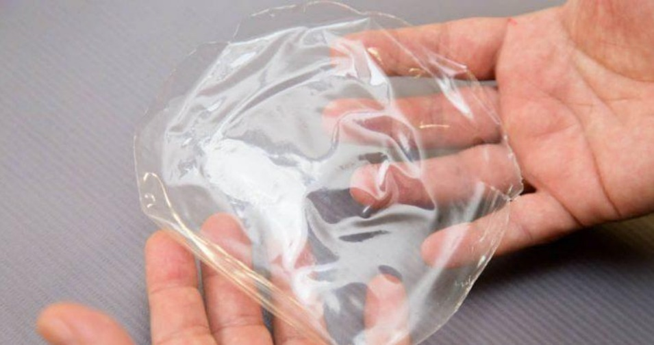
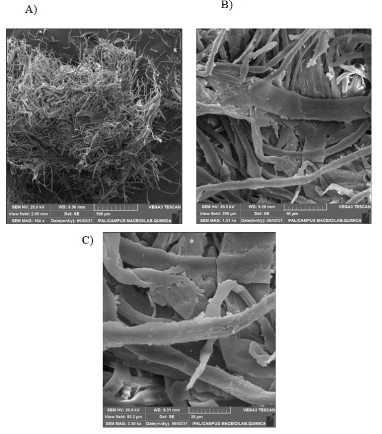

Sobre Nós
História
O produto surgiu a partir de um projeto de pesquisa institucionalizado no IFAC Campus Sena Madureira em agosto de 2023. Inicialmente, a equipe buscava desenvolver um plástico biodegradável e bactericida, mas ao longo da pesquisa, a ideia evoluiu para a criação de um produto final inovador: um band-aid biodegradável e terapêutico.
O projeto foi idealizado pelo professor e doutor Marcelo Ramon, em conjunto com os discentes João Augusto, Jordana Raica, José Cleiton e Joarina, todos do IFAC-CSM. O desenvolvimento ocorreu no laboratório de química do IFAC Campus Sena Madureira, em parceria com o laboratório de nanobiotecnologia da rede Bionorte e da Universidade Federal do Acre (Ufac). Essa colaboração resultou na criação de um curativo avançado que alia sustentabilidade e eficiência no tratamento de ferimentos.
Nosso Time

Marcelo Ramon Nunes
Docente de Química do IFAC

João Augusto
Discente do Integrado em Informática

Joarina Nascimento
Discente do Integrado em Agropecuária

José Cleiton Cabral
Discente do Integrado em Informática
Propósito
O propósito deste band-aid inovador é ir além da simples proteção física contra agentes externos. Nossa solução visa acelerar o processo de cicatrização de ferimentos expostos, protegendo-os contra infecções de maneira eficiente e sustentável. Ao substituir materiais plásticos por taboca biodegradável e enriquecer o curativo com nanopartículas e nanoemulsões de óleos amazônicos, buscamos oferecer uma alternativa ecológica e clinicamente avançada, contribuindo tanto para a saúde humana quanto para a preservação do meio ambiente.
O Produto
Descrição
Os curativos band-aid convencionais, embora eficazes na proteção de ferimentos contra sujeira e infecções, são feitos de materiais plásticos derivados de petróleo, que não oferecem nenhum benefício adicional para o processo de cicatrização e representam um impacto ambiental significativo devido à sua baixa biodegradabilidade. Em resposta a essas limitações, nossa equipe de jovens pesquisadores desenvolveu uma alternativa inovadora: um band-aid feito a partir de taboca, uma espécie de bambu amazônico. Este curativo é livre de petrolatos, 100% biodegradável e solúvel em água, bem como em composições aquosas, como sangue e pus. Além de proteger o ferimento, ele é reforçado com nanopartículas de prata, que atuam como bactericida, e com uma nanoemulsão de óleo de copaíba e andiroba, conhecidos por suas propriedades anti-inflamatórias, antissépticas e antimicrobianas.

Vantagens
- 100% biodegradável e solúvel em água.
- Propriedades naturais que promovem uma rápida cicatrização.
- Solução livre de petrolatos e produtos químicos agressivos.
Pesquisa
Estudos
Para desenvolver o band-aid de taboca, nossa equipe conduziu uma série de estudos e experimentos:
- Propriedades Materiais: Realizamos testes para assegurar que a taboca, uma vez tratada e processada, mantivesse suas propriedades estruturais e pudesse ser utilizada como base para o curativo, garantindo flexibilidade, resistência e biodegradabilidade.
- Nanopartículas de Prata: As nanopartículas de prata foram incorporadas ao material do curativo após uma revisão detalhada de suas propriedades bactericidas. Estudamos a dosagem adequada para maximizar o efeito antimicrobiano sem comprometer a segurança para o uso humano.
- Nanoemulsão de Óleo de Copaíba e Andiroba: Investigamos a eficácia dos óleos de copaíba e andiroba na promoção da cicatrização, focando em suas propriedades anti-inflamatórias e antissépticas. Desenvolvemos uma nanoemulsão desses óleos para garantir uma aplicação uniforme e prolongada de seus benefícios terapêuticos diretamente no ferimento.
- Solubilidade e Biodegradabilidade: Testes de solubilidade foram realizados para garantir que o curativo se dissolva de maneira controlada em contato com líquidos corporais, como sangue e pus, evitando resíduos após o uso e facilitando a remoção natural do produto.

Imagens de microscopia eletrônica de nanopartículas de prata.

Imagens de suspensão aquosa de nanopartículas de prata preparadas por nossa equipe.

Imagem de microscopia eletrônica da celulose de taboca obtida por nosso time em parceria com o laboratório de química do Instituto Federal de Alagoas (IFAL).
Publicações
Referências Bibliográficas
- ABDULKHALEQ L. A. et al. The crucial roles of inflammatory mediators in inflammation: A review. Veterinary World, Uganda, v. 11, n. 5, p. 627–635, may. 2018.
- ABDELHAMID, H. N.; MATHEW, A. P. Cellulose-Based Nanomaterials Advance Biomedicine: A Review. International Journal of Molecular Sciences, Basel, v. 23, n. 9, p. 1-34, may 2022.
- BRITO, E. A. A. et al. Development of nanoemulsions from commercial copaiba oil with potential for use in cosmetics. Journal of Engineering and Exact Sciences, Arapiraca, v. 6, n. 1, p. 001-007, jan./mar. 2020.
- DINIZ, L. V. et al. Bionanocomposite based on curaua cellulose nanofibers and silver nanoparticles. International Journal of Biological Macromolecules, vol. 206, p. 485-495, jul. 2022.
- JUNIOR, J. F. A. et al. Antioxidant and antimicrobial activities of encapsulated extracts of Eugenia uniflora leaves. Journal of Biotechnology, Amsterdã, v. 325, n. 2020, p. 68-75, nov. 2020.
- MURICY, G. et al. Biotechnological potential of bacteria associated with marine sponges. Critical Reviews in Microbiology, Brussels, v. 37, n. 2, p. 87-95, 2011.
- NETO, E. M. B. et al. Nanostructures based on native and modified cellulose as vehicles for antimicrobial agents: A critical review. Carbohydrate Polymers, Nova York, v. 284, n. 119220, p. 1-24, feb. 2022.
- OLIVEIRA, D. et al. Evaluation of antioxidant, anti-inflammatory and antinociceptive potential of ethanolic extracts from Rubiaceae species. International Journal of Molecular Sciences, Basel, v. 22, n. 22, p. 1-15, nov. 2021.
- OSTER, G. et al. A Cost-Benefit Analysis of Antimicrobial Catheters: A Case Study Using Silver-Alloy Catheters. Infection Control & Hospital Epidemiology, Cambridge, v. 21, n. 10, p. 729-734, oct. 2000.
- RIVERA, E.; CAMPOS, L.; OLIVEIRA, L. G. M. Uso da taboca (Guadua weberbaueri) para artesanato em comunidades de várzea no baixo Amazonas: Relato de Experiência. Multitemas, Campo Grande, v. 26, n. 62, p. 263-274, jun. 2021.
Contato
Preencha o formulário abaixo para entrar em contato conosco:
 Facebook
Facebook Instagram
Instagram LinkedIn
LinkedIn